MIRCHO, ANDITS HISTORY
Speakers write the language using brushes on papers and/or scrolls. They use Mircho, a vertical alphabetical writing system.
I'll be explaining how it works in the next part, but for now, I'll be babbling about how Mircho came to be. I treat the changes I make in working with the conlang and the conscript as actual changes that the language has "gone through" in the conworld.
Two years ago, I was just bored.. Nothing special really. It just popped into my head that I'll make an "own alphabet". At that time, I already have made two, but then I end up forgetting so yeah, I'm making another one.
Guess what I ended up with, it's the typical make-a-custom-shape-for-a-letter alphabet. I was done, then I was bored again.
I wasn't satisfied, I had to work on another one after that. I decided to just choose some sounds, not too many. Interestingly, I ended up choosing mostly voiced consonants, I really like how they sound, and just three vowels - a, i, o.
At first, I was going for a featural alphasyllabary, I was planning to make a version of Hangul where it's just the horizontal stack, and syllables are going down vertically.

or just dominantly, at least. I remember considering to include a placeholder, but I dropped it anyways.
I started making the glyphs, all broad and short.
Hangul is featural, following the shapes of the speech organs.

However, I realized that as long as sounds with similar features have a common feature in the script as well, it is still featural. right? I dont wanna just follow the shapes of the speech organs as well because it'll only end up as Hangul.

Know that this is just what I remember it was. Others are just "changing" the form a bit. I ended up not using the /ŋ/ sound so I gave the glyph to /h/. Green indicates the changes or occurences made when I changed the form of the script a bit (more on that later). The glyph for /v/ actually occured to me because of this change. This change also made it possible to write /z/ by adding an additional stroke to /s/. The glyph for /tʃ/ is just /d/ with an additional stroke inside as well.
For the vowels, I just made it similar to Hangul vowels, just that there are no vertical ones. I also had to make a system for adding glides. Here are the basic ones:
It looked too much like Hangul tho. I don't want others to think that I'm learning Korean just because of the K-Pop trend. (there are toxic bandwagons btw) I already knew about Hangul even before the hype for K-Pop, and I was really fascinated of how it works. I just have to know the glyphs, and I'll already know how they'll be put together into syllables. I love just how amazing it is, and simple and predictable at the same time.
But it has to be unique in a way. Hangul is so geometric so what I did is I changed the angles of the glyphs, and I added a touch of Chinese aesthetics in it some time after.

Lines became curved, it added some flavor onto it. It also made some glyphs possible. This change made the /v/ glyph possible, based on the two strokes at the top of 公, 分, 分, as well as the additional tiny stroke in /z/ for voicing, you know, Chinese has a lot of those tiny strokes, 火, 汉, which I very much like.
The placeholder was under constant changes as well. It went from a vertical line, to Hangul's ㅇ, to an /h/ glyph with an additional stroke over it.
One day, I realized "Alphasyllabary? letters are stacked like a sandwich.. syllables are stacked like a sandwich as well.. wait, isnt that just an alphabet? letters next to each other, just that the flow is vertical".
And I think, that is how Mircho came to be, at least this is what I remember so far.
CONTEXTAND HISTORY
Mir-an is a language spoken in the old times by The People of Mir. They call themselves Miro.
They live in.. yes, you guessed it right, Mir, a continent divided into eight regions, one being the capital of course, Zanmir. The name just literally says "middle land" because.. yes, you guessed it right again, it's the middle region.
Here is a map of Mir. Solid white lines represent the land border and rivers (the main ones, at least). Dashed white lines represent mountains and mountain ranges. The mountain range is on the eastern side, the others are smaller neighbouring mountains that follow a path. The cactus represents a desert. This is the leeward side of the mountain range. fuk is it the other side?? Red lines represent the region boundaries. Most of them coincide with the mountains and rivers. The dashed red line, however, represents a disputed area. I think you see why. very noob at worldbuilding, does this all make sense?
Mir-an literally means "language of Mir", that simple. As said earlier, Mir-an was spoken in the old times. I'm not yet sure if it will be used as frequently in the modern times. It's because the language is supposed to be simple, though not as simple as Toki Pona, but pretty sure it will be a bit hard to express modern concepts. I'm still working on very basic concepts and making sure words are short as possible to make room for more complex ones. This, I think, is the reason of my slow progress, when I make a word, I want it to be one-syllable only so I don't end up having long words when I start smashing them. is this a real thing? longwordophobia?
But anyways, despite the probable death of the language, Mir-an will surely make it into the surface of modern times. Mir-an should show up in artifacts, telling the story of how people used to live. The people might even revive it if it actually dies like Latin or Hebrew.. or maybe it just evolves and transforms into a language that is actually useful in these times. Pretty sure there is at least one Miro who speaks it here in Oar (Earth) ;) well i just go to Mir when everybody hates me here :) ps: im fine :)
Mircho, the writing system, is the reason why I started all of this. Transliterating English to it looks terrible so I decided to make a conlang for it. This is also why Mir-an is set in the old times. I'll discuss about it in the orthography section.
TL; DR
guy gets bored, made a conlang then codes a website for it after two years, stuck at home (as if i go out before the pandemic), even tho he's noob at both conlanging and coding. he asks you pls check if these make sense.
QUESTIONS AND CLARIFICATIONS ARE IN YELLOW. PLS READ THEM :)